부모님께 설명하는 AI
왜 필요한지, 어떻게 쓰는지. ChatGPT로 한 번 체감해 보시면 됩니다.
같이 보시죠 — TV·노트북
오늘, 이 네 가지만요
새 취미 배우자는 자리 아니에요. 이미 하시는 일 이야기예요.
- AI가 뭔지 — 초안을 받아 고치는 도구
- 어떻게 여기까지 왔는지 — 한 줄 역사 (Jev까지)
- 어머니·아버지 일로 한번 써보기
- ChatGPT로 이어갈지… 판단은 두 분이!
AI가 뭐냐면요
질문하면 초안을 적어 주는 도구예요. 완벽한 직원이라기보다… 말 잘 듣는 조수에 가깝죠. 예전에 검색해서 링크 고르셨다면, 지금은 글·표·그림 초안을 받고 고치시면 됩니다. 틀린 말도 해요. 그래서 — 확인은 사람이세요!
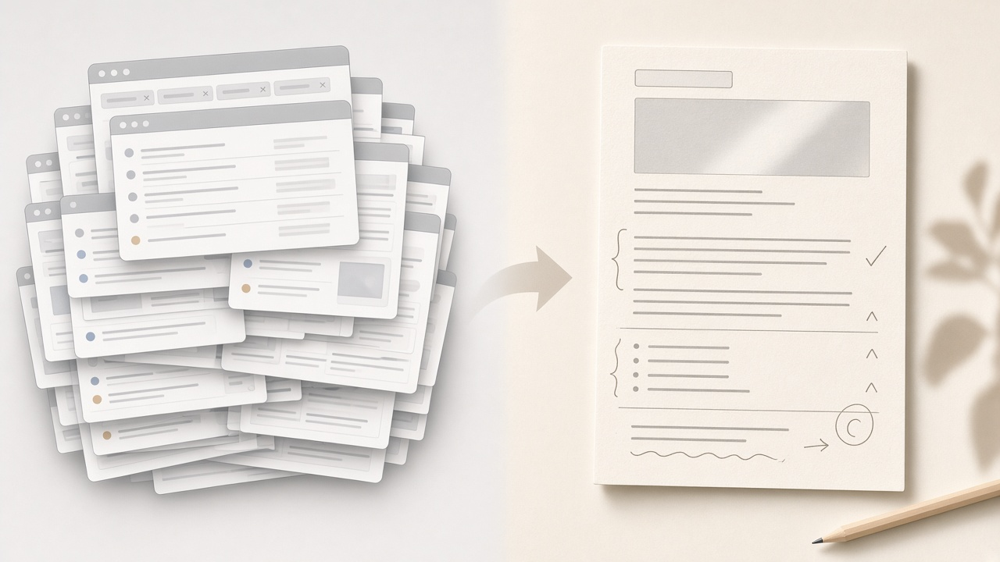
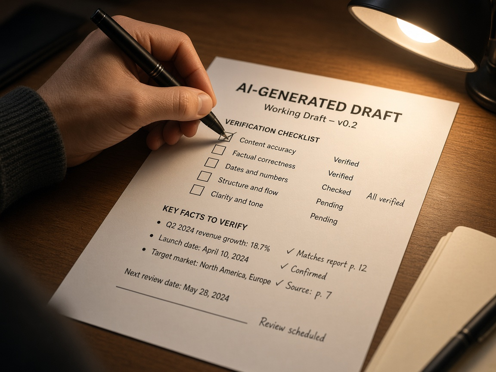
왜 지금이에요?
글 쓰고, 정리하고, 찾고, 반복하는 일… 이미 두 분 일 안에 있지 않으세요? 새 직업을 배우라는 말이 아니라, 하던 일의 초안을 맡겨 보자는 말씀입니다.
짧은 역사 — 한 줄로만요
옆줄기로 빼지 않았어요. Jev도 여기 마지막에 같이 있어요.
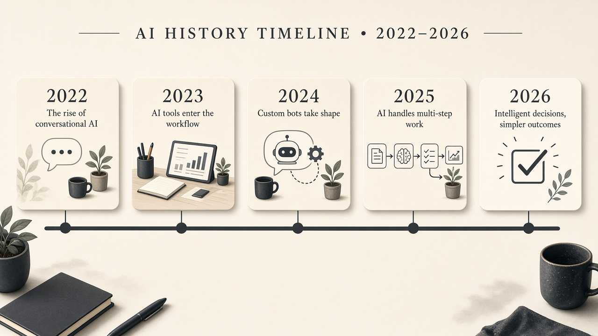
| 때 | 장면 | 말로 |
|---|---|---|
| 22말~23 | ChatGPT | “이렇게 말해 주세요”가 잠깐 기술처럼 보였어요. 남는 건 원하는 걸 분명히. |
| 23 | 도구 붙이기 | 바깥 도구를 많이 붙였는데… 끝까지는 잘 안 가더라고요. |
| 23~24 | 나만의 GPT | 이름만 바꾼 주문 폭주. 포장 ≠ 실력. |
| 25~26 | 이어서 일하기 | 설정은 얇게. 기준·맥락이 자산이에요. |
| 26.9 | Jev | 긴 글 말고 A/B·예/아니요. 자동화 뒷단 부품이에요. |
그래서 남는 건요?
모델이 못 하면 바깥에 장치를 붙이고, 다음 모델이 그걸 흡수하고… 결국 짧고 정확한 목표·기준만 남아요. Jev도 그 줄 위예요. ‘글 대신 체크’를 따로 판 거죠.
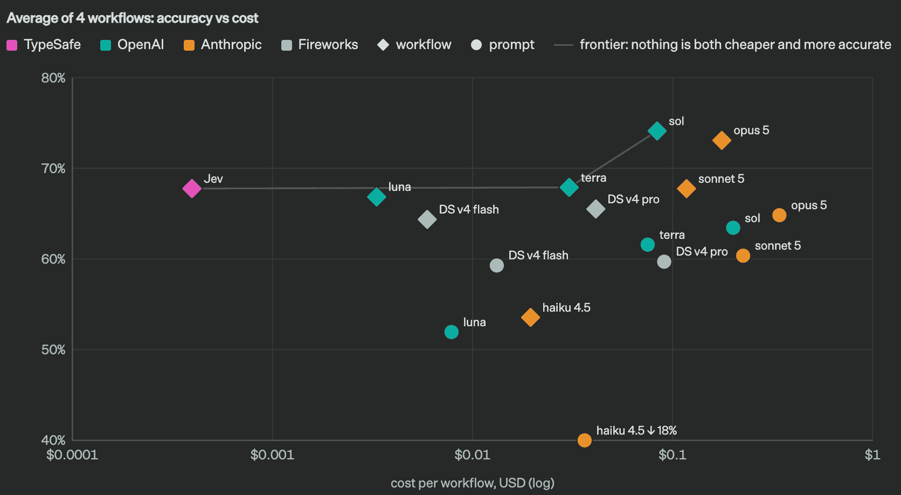
어머니 일 — 여기부터 한번?
세금·회계, 금융, 자료 정리… 그리고 동생 학습자료, 한국사 연표. 오늘 실연은요: 교과서 한 쪽 → 연표 초안 + 그림. 숫자·신고는요? 사람이 확정하세요.
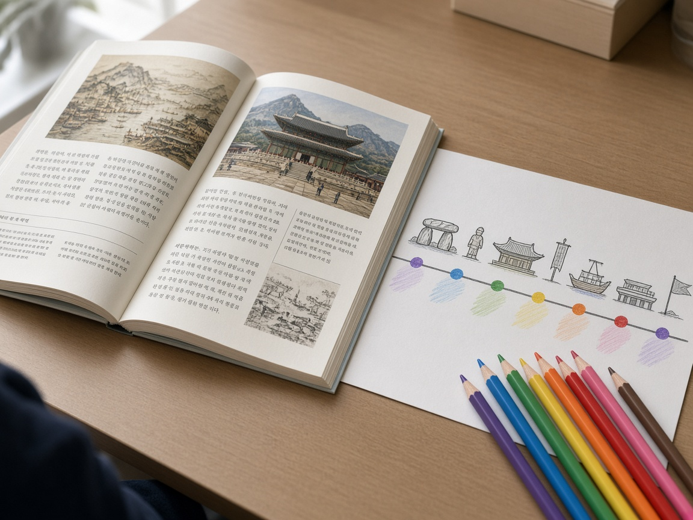
아버지 일 — 결정용 한 장
관리, 프로젝트 수주… 세부까지는 제가 모릅니다. 지어내지 않을게요. 오늘 실연은: 받은 메모 → 결정용 한 장 초안. 최종 판단·고객 말씀은 사람이시죠!
쓰는 법? 네 줄이면 돼요
① 역할 한 줄 — 누구처럼? ② 재료 — 파일·사진·메모 주세요. ③ 원하는 형태 — 표? 연표? 한 장? ④ 틀리면… 다시 물어보세요!
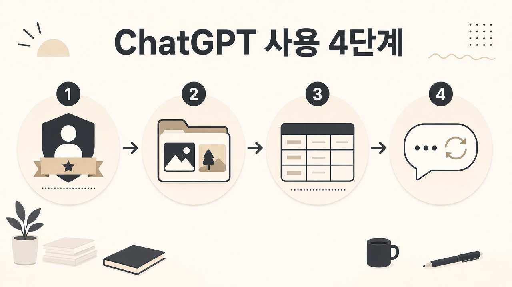
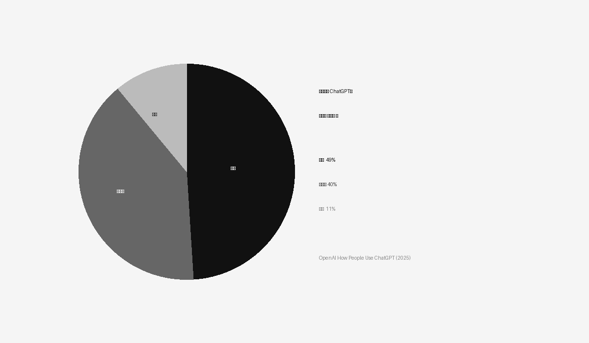
사람들이 실제로 시키나 봐요
업무에서는 ‘시키기(글쓰기)’가 더 커요. 잘 쓰는 분은? 재료를 주시고 초안을 고치시죠.
OpenAI How People Use ChatGPT
그림도 같은 화면에서요
Images 2.5 (2026-09-08) — 전 등급. 클로드는 사진·일러스트를 안 만들어요.
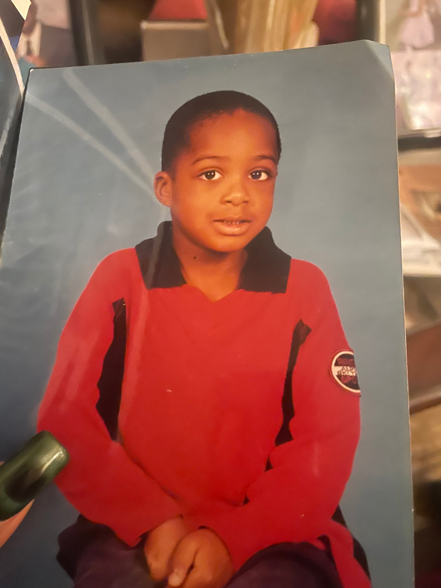
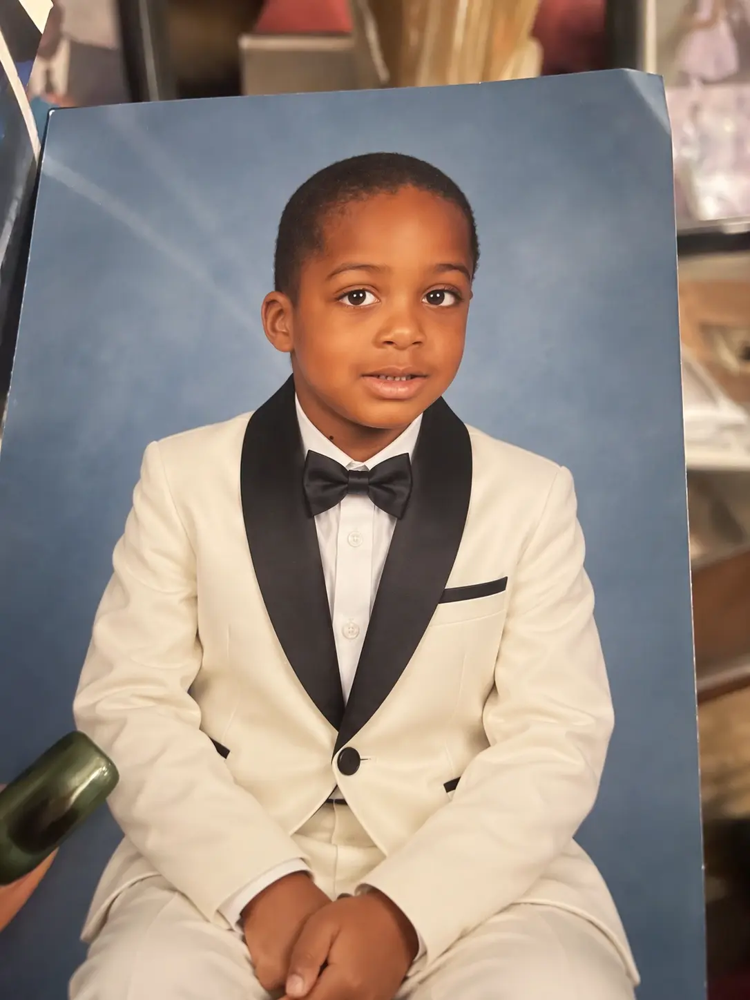
이런 그림도 나와요
초대장, 설명용 삽화… 어머니 학습자료에도 같은 축이에요.
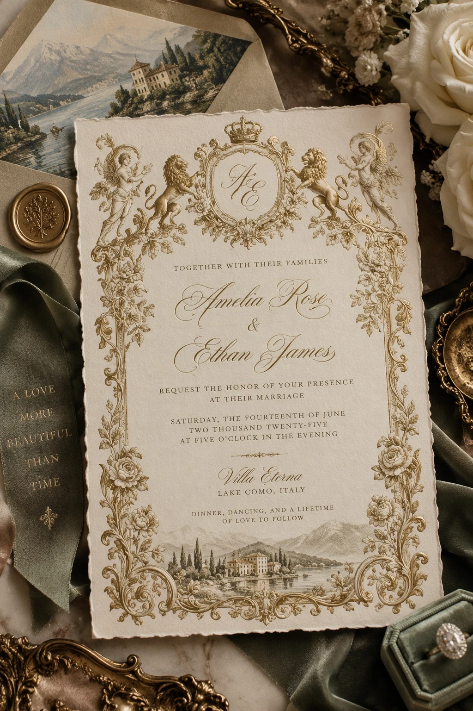
왜 ChatGPT예요?
글 + 파일 + 그림이 한 화면이에요. 유료 이유는 그림이 아니라 · 서류를 반복해서 올리는 한도예요. 같은 구독에 Codex(자식용 개발)도 있어요. 솔직히요? AA 지수(2026-10)에선 Claude Opus 5.5가 앞섭니다(~58). GPT-6 Astra는 대략 50대 초반. 그래도 두 분 첫 도구는 일·그림·익숙함으로 ChatGPT!
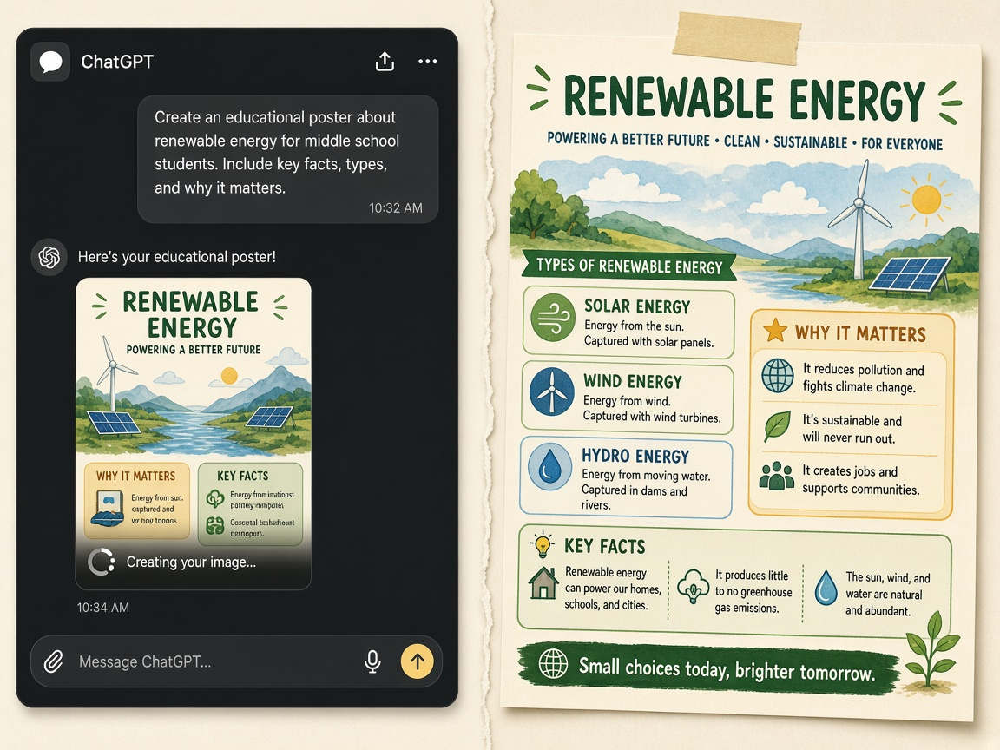
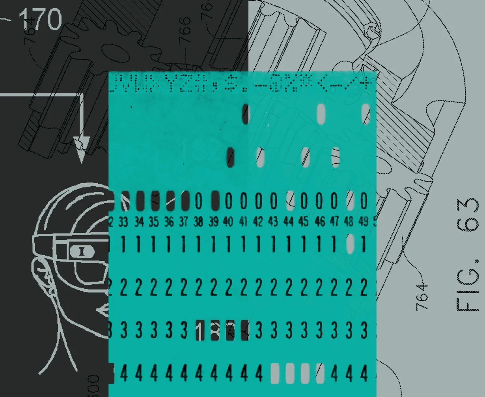
역사 한 컷 더 — 2026년의 체크박스
앞에서 본 타임라인의 마지막 칸이에요. 별도 제품 설명회가 아닙니다! 두 분이 매일 켜실 화면은 ChatGPT예요. Jev는… 뒤에서 자동으로 고르는 부품으로만 기억해 두시면 충분합니다.
이것만은요…
· 비밀 서류 그대로 올리지 마세요. · 답을 무조건 믿지 마세요 — 숫자·날짜는 꼭 보세요! · 설정·플러그인 수집부터 하지 마세요. 본업 판단이 더 오래 갑니다.
다음에 하실 일
1. ChatGPT 계정 2. (원하시면) Plus 3. 이번 주 일 하나 — 교과서 사진? 메모? 결제는 두 분이 하세요. 저는 버튼 안 누릅니다!
참고 그림 더 있어요
필요할 때 넘기시면 됩니다. 비율은 원본 그대로예요.
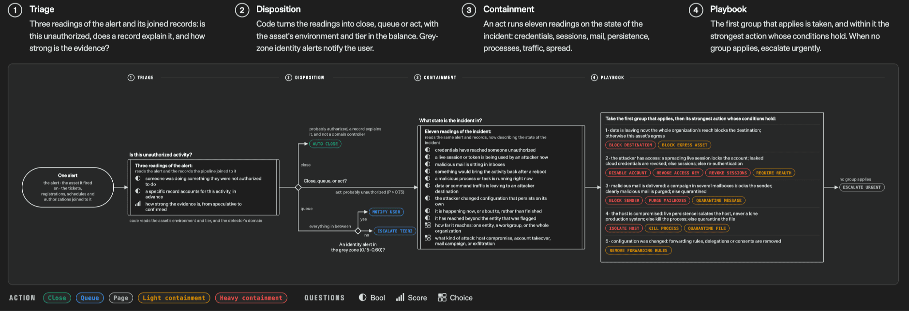
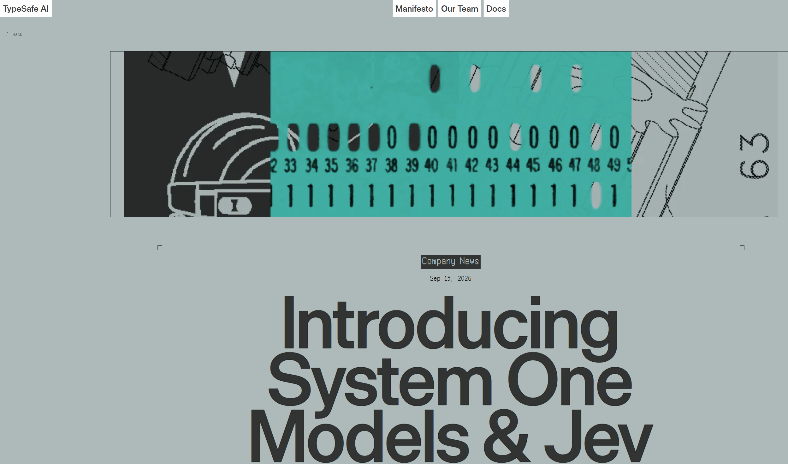
출처 · 확인일 2026-10-02
- OpenAI — How people are using ChatGPT
- OpenAI — ChatGPT Images 2.5 (2026-09-08)
- TypeSafe — System One & Jev (2026-09-15)
- Artificial Analysis Intelligence Index
- Claude Help — 이미지 생성 불가
- 이미지: 자료/일러스트 · 자료/from-links (원본 비율 유지)